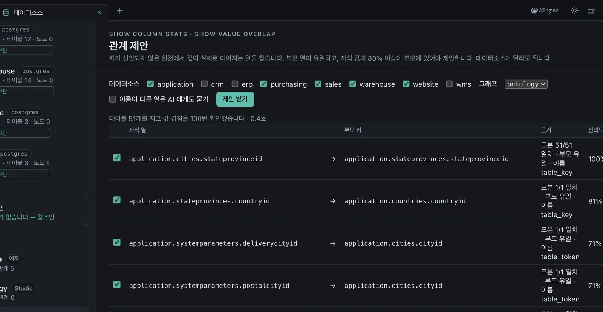
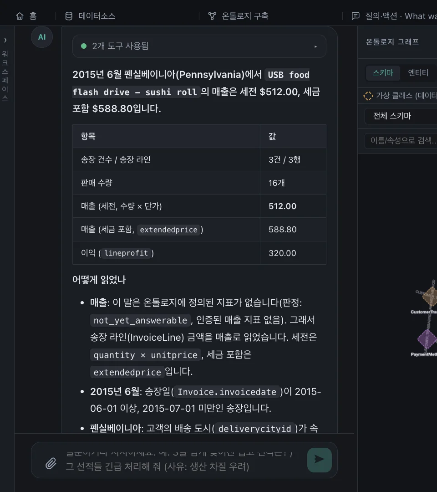

마지막 장에서는 uEngine이 만드는 Ontological Studio로 같은 Wide World Importers 원천과 같은 질문을 따라 한 결과를 짧게 비교합니다. 모델과 실행 조건이 달라서 순위를 매기기보다, 두 도구가 무엇을 다르게 하는지와 어떤 용도에 적합한지를 살펴봅니다.
이 장을 읽기 전에
이 교재를 만든 uEngine은 Ontological Studio를 만드는 회사입니다. 그래서 숫자마다 조건과 출처를 함께 적었고, NVIDIA 쪽이 앞서는 항목도 그대로 옮겼습니다. 두 제품을 똑같은 조건으로 비교한 벤치마크가 아닙니다.
Ontological Studio는 무엇인가#
Ontological Studio는 macOS·Windows에서 실행되는 오픈소스 데스크톱 앱입니다. 설치 파일 하나에 데이터 패브릭·그래프 DB(Ontological DB)·에이전트가 들어 있습니다. 데이터베이스와 문서를 복사하지 않고 연결한 뒤, 답해야 할 질문(골든 퀘스천)을 기준으로 클래스·관계를 설계해 온톨로지를 만들고, 질문에는 관계를 따라 근거와 함께 답합니다. 같은 온톨로지 위에서 업무 시스템 API를 부르는 액션과 업무 앱까지 이어 갑니다. 자세한 소개는 제품 페이지와 Ontological Studio 튜토리얼에 있습니다.
같은 예제를 Studio로 따라 하면#
같은 PostgreSQL의 wideworldimporters를 같은 읽기 전용 계정(wwi_ro)으로 연결했습니다. 흐름은 이렇습니다.
| 단계 | NVIDIA Auto Ontology (이 교재 2~4장) | Ontological Studio |
|---|---|---|
| 연결 | 연결 1개, 적재(표본·임베딩) 6초 | 스키마마다 데이터소스 5개, 행을 복사하지 않음 |
| 관계 | 컴파일이 조인을 추론(모델 사용) | 「관계 제안」이 열 값의 중복 정도를 측정해 후보를 제안(0.4초, 모델 없이) |
| 개념 | 표마다 용어 51개 자동, 승인 대기 | 초안 만들기로 클래스 31개·관계 64개(1.9초), 보관 표·뷰 20개는 뺌, 검토 대기 |
| 질문 | Chat → 질문 에이전트가 SQL을 짜서 실행 | 질의 탭 → 에이전트(Claude Code)가 온톨로지와 원천 SQL로 답 |


숫자로 본 차이#
| 항목 | NVIDIA Auto Ontology | Ontological Studio |
|---|---|---|
| 조인·관계 추론(업무 키 69개) — 맞은 비율 / 찾은 비율 | gpt-4.1(11-14) 82.5% / 68.1% · gpt-6.1-sol(이 교재) 75.8% / 72.5% | 100% / 92.8% (64개 제안, 모두 맞음) |
| Q1 (정답 $588.80) | gpt-4.1(11-14): 물을 때마다 다른 오답 · gpt-6.1-sol(이 교재): 세전 $512.00·빈 값, 「매출」 SQL 속성을 정의한 뒤 $588.80 | 세전 $512.00과 세금 포함 $588.80을 이름을 붙여 함께 제시(한국어·영어) |
| ROAS | 지어내지 않음(광고비 없음) | 지어내지 않음, 같은 달 매출을 함께 제시 |
| 평가 질문 21개 정답 | gpt-4.1 14개 · gpt-6.1-sol 14개 (각 한 번) | 초안 평균 15.3개 · 검토본 15.7개 (각 세 번) |
| 질문당 시간(중앙값) | gpt-4.1 9.1초 · gpt-6.1-sol 29.8초 | 15.8~16.5초 |
조건과 출처
- NVIDIA 수치: 조인·평가·시간은 11월 14일 측정(gpt-4.1·gpt-6.1-sol, NVIDIA 키가 없어 OpenAI 모델을 중계기로 연결). 조인의 gpt-6.1-sol 값과 Q1의 gpt-6.1-sol 답은 이 교재(11월 15일)의 실행입니다. 기본 모델 Nemotron으로는 재지 못했습니다.
- Studio 수치: 11월 15일 아직 배포하지 않은 개발 빌드(보완 패치 적용)로 측정한 값입니다. 지금 내려받을 수 있는 0.1.2판으로 11월 14일에 같은 측정을 했을 때는 조인 24.2% / 20.3%, 평가 12개, 41초였습니다. Studio의 질문 에이전트는 Claude Code(Anthropic 모델)입니다.
- 정답 조인 98개(업무 키 69개 + 감사 열 29개)와 평가 질문 21개는 원천 스키마 문서와 데이터로 미리 만든 것이고, 같은 채점 규칙으로 두 도구를 평가했습니다. Studio를 수정하는 쪽은 평가 질문과 정답을 보지 않았습니다.
- 모델이 다르고 반복 횟수가 다르므로, 작은 차이는 순위로 읽지 마세요.
어디에 맞나#
NVIDIA Auto Ontology는 서버로 띄워 여러 사람이 함께 쓰는 데이터 팀의 의미 계층 서비스에 맞습니다. 메타데이터에서 용어집 초안을 자동으로 만들고, 사람의 인증 흐름·역할 기반 권한·SSO·API 토큰·OAuth로 보호한 MCP 서버를 갖췄습니다. Docker Compose·Helm으로 배포하고, 질문은 SQL로 답합니다. 커넥터는 열 가지이며, NVIDIA NIM 모델을 기본으로 씁니다.
Ontological Studio는 한 사람이나 작은 팀이 자기 PC에서 여러 시스템의 데이터를 복사하지 않고 이어 온톨로지를 만들고, 그 위에서 질문·액션·앱까지 이어 가는 데 맞습니다. 관계를 사람이 검토하는 그래프로 두고 근거와 함께 답하며, 답에서 끝나지 않고 승인 후 실행하는 액션으로 이어집니다. 둘은 겹치는 부분도 있지만 적합한 용도가 다릅니다. 데이터 팀이 운영하는 의미 계층 서비스가 필요하면 Auto Ontology를, 업무 담당자가 온톨로지로 묻고 일을 시키는 도구가 필요하면 Studio를 먼저 살펴보세요.
더 보기#
- Ontological Studio 제품 페이지 — 내려받기, 데모 영상
- Ontological Studio 튜토리얼 — 설치부터 액션·앱까지
- 부록 「문제 해결」 — 이 교재를 따라 하다 막히는 곳
수고하셨습니다. 이 교재에서 NVIDIA Auto Ontology로 원천 연결 → 의미 계층 컴파일 → 검토 → 질문 → MCP·API 연동까지 전 과정을 살펴보았습니다.